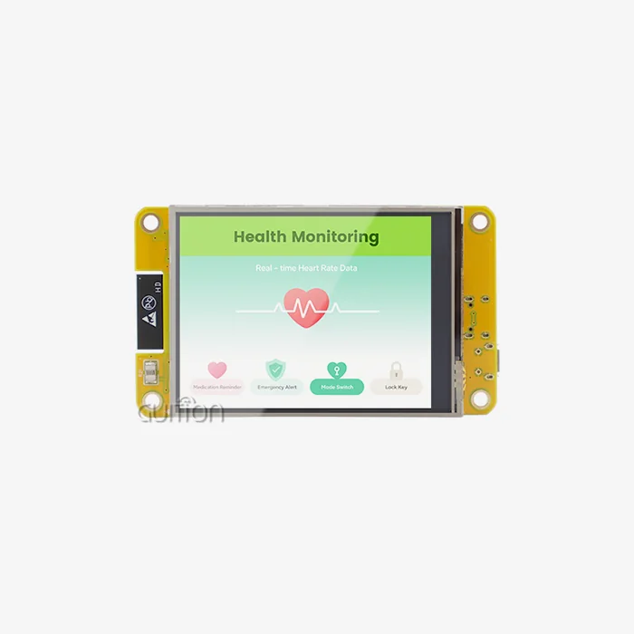

ESP32-2432S028R
Guition · 2.8 inch ESP32 display module
ESP32-2432S028R is a 2.8" 320x240 TN Resistive touch ESP32 display board by Guition based on the ESP32 with 4MB flash, - PSRAM.
Features, ports & interfaces
- SPI display
- Resistive touch
- 4 MB flash
- microSD (TF) card slot
- Wi-Fi 4 (802.11 b/g/n, 2.4 GHz) – version from the ESP32 datasheet
- Bluetooth 4.2 BR/EDR (Classic) + BLE – version from the ESP32 datasheet
- Serial (UART) – P1, 4-pin 1.25 mm Molex PicoBlade (sold as "JST 1.25" / MX1.25)
- I2C / GPIO – CN1, 4-pin 1.25 mm Molex PicoBlade
- GPIO – P3, 4-pin 1.25 mm Molex PicoBlade
- DHT11 temperature / humidity sensor port
- Speaker – P4, 2-pin 1.25 mm Molex PicoBlade (amplified)
- RGB LED interface
Specifications
| Parameter | Value | Source |
|---|---|---|
| Screen size | 2.8" | source |
| Resolution | 320x240 | source |
| Panel | TN | source |
| Shape | Rectangular | |
| Display interface | SPI | source |
| Display driver | ILI9341 | source |
| Touch | Resistive | source |
| MCU / SoC | ESP32-D0WD-V3 | source |
| MCU family | ESP32 | |
| CPU frequency | 240MHz | source |
| Flash | 4MB | source |
| PSRAM | - | source |
| SRAM | 520KB | source |
| Wi-Fi | Yes | source |
| Bluetooth | Yes | source |
| Category | ESP32 Display Module | |
| Active area | 57.6×43.2 (mm) | source |
| Colors | 16 BIT RGB (65K colors) | source |
| Connectivity | Wi-Fi, Bluetooth | source |
| Dimensions | 86.0×50.0 (mm) | source |
| Expansion / IO | TF Card, Serial, DHT11 Sensor, RGB-LED | source |
| Interface detail | SPI | |
| Memory | 520KB SRAM, 448KB ROM | source |
| ROM | 448KB | source |
| Speaker interface | Yes | source |
| Vendor | Guition | |
| Operating voltage | 5V | source |
Official links & documentation
Files
Offline copies are available on the interactive page.